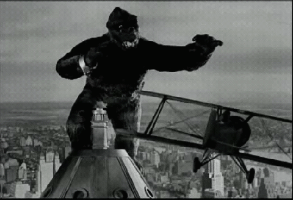
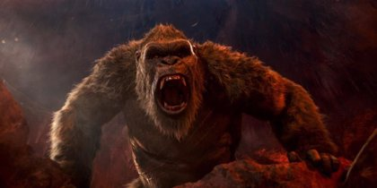

king kong

King Kong es el nombre de un gigantesco gorila ficticio que habita en la Isla Calavera, y que ha sido el protagonista de varias películas, además de haber aparecido en otros medios, como series de televisión, libros, videojuegos o cómics, habiéndose convertido por ello en uno de los iconos de la cultura popular moderna

En la película original de 1933, Carl Dehnam, un director de cine inquieto y audaz, planea hacer un peligroso viaje hacia una isla de la cual solo él sabe cómo llegar. Su objetivo: filmar a una leyenda llamada Kong, un temible monstruo. Tiene casi todo lo necesario: el mapa de la isla, poderosas bombas de gas, hombres bien armados pero le falta lo más importante: una hermosa protagonista

King Kong (1933). La película clásica original, recordada por sus pioneros efectos especiales usando la técnica stop-motion, por sus animatronics y su historia de la Bella y la Bestia.
El hijo de Kong (1933). Una secuela estrenada el mismo año, que trata sobre el retorno de una expedición a Isla Calavera y el descubrimiento del hijo de Kong
King Kong vs. Godzilla (1962). En esta película japonesa de los Estudios Toho, unos marineros encuentran en la Isla del Faro (ubicada cerca de Japón) un enorme gorila y deciden llevarlo a Japón para que acabe con Godzilla, un enorme dinosaurio mutante que se encuentra atemorizando a todo el país. En esta versión, el simio tenía la particularidad de ser más grande, alcanzando de esa forma la altura de Godzilla, y sus brazos conducían electricidad. Fue la primera película en color en la que aparecen tanto Kong como Godzilla.
King Kong Escapes (1967). Al igual que la anterior, es una película japonesa dirigida por Ishiro Honda.
King Kong (1976). Remake del productor italiano Dino De Laurentiis, producido por la Paramount y dirigido por John Guillermin. protagonizada por Jessica Lange y Jeff Bridges. Tuvo un gran éxito comercial desde el momento de su estreno (no así de crítica), y ganó un Oscar por sus efectos especiales.
King Kong 2 (King Kong lives) (1986). Producida por De Laurentiis Entertainment Group (DEG), la secuela de la versión de 1976 fue dirigida también por Dino De Laurentiis y protagonizada por Linda Hamilton y Brian Kerwin. El argumento continúa en el punto donde finalizó su antecesora, al descubrir que Kong sobrevive a su caída de lo alto del World Trade Center y a los disparos de los helicópteros, así que para su recuperación, requiere una operación coronaria. En esta película se incluye una hembra de la especie de Kong, con la cual tiene un hijo, después de que Kong muera.
King Kong (2005). Un remake de la película original producido por Universal Pictures y dirigido por el ganador del Oscar Peter Jackson, director de la trilogía cinematográfica de El Señor de los Anillos, y protagonizada por Naomi Watts, Adrien Brody y Jack Black. Con más de tres horas de duración, es la película de King Kong más larga. Fue ganadora de tres Premios Óscar.
Kong: La Isla Calavera (2017). Ambientada en la década de 1970 y dirigida por Jordan Vogt-Roberts, supone un nuevo reinicio de la historia.2Está protagonizada por Tom Hiddleston y Brie Larson.
Godzilla vs. Kong (2021). Es una secuela de Godzilla: King of the Monsters (2019) y Kong: Skull Island (2017), y será la cuarta película del MonsterVerse de Legendary Entertainment. La película también será la 36ª película de la franquicia Godzilla, la 12ª película de la franquicia King Kong y la cuarta película de Godzilla que será producida completamente por un estudio de Hollywood. Está protagonizada por Alexander Skarsgård, Rebecca Hall, Kaylee Hottle, Millie Bobby Brown, Julian Dennison, Brian Tyree Henry y Eiza González.